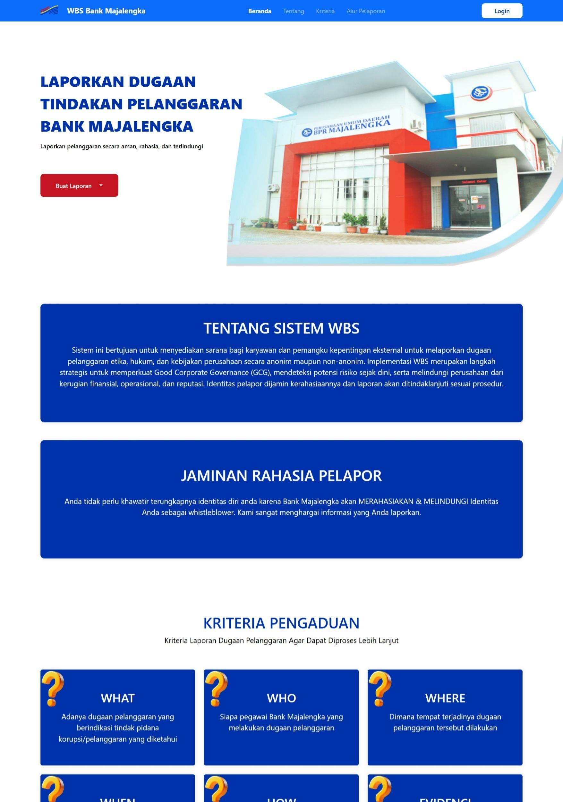
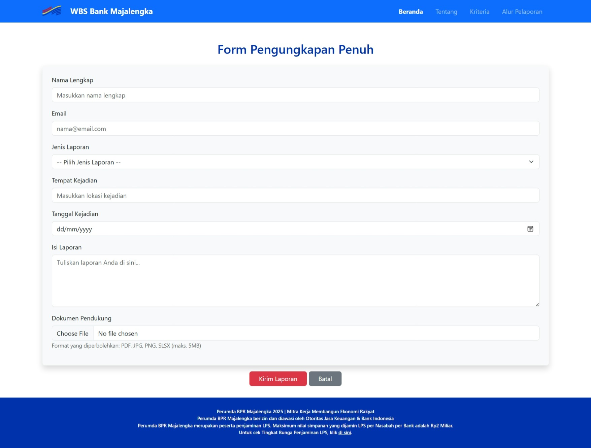
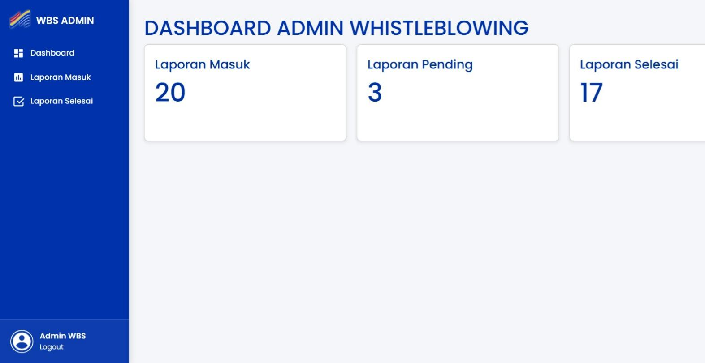
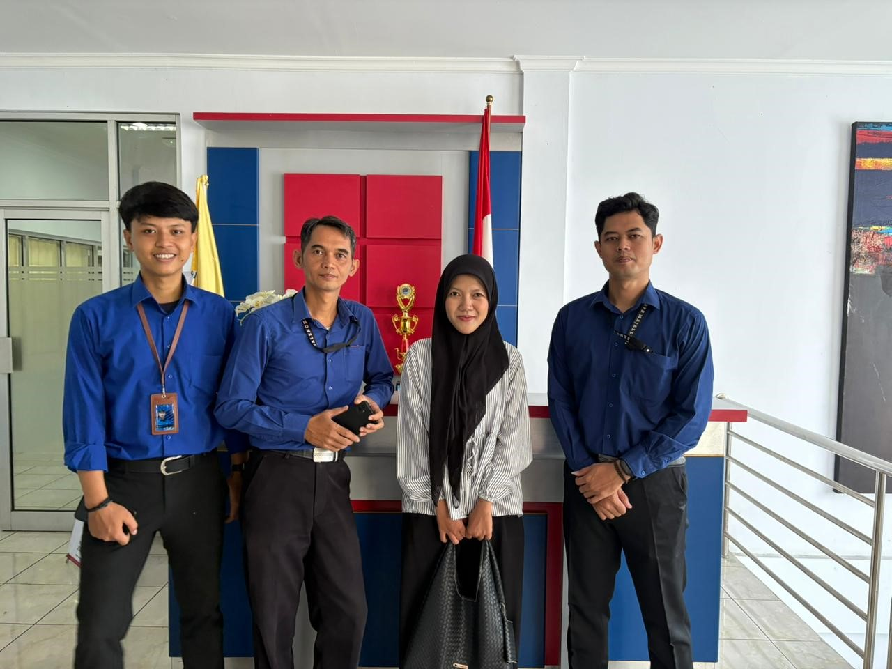
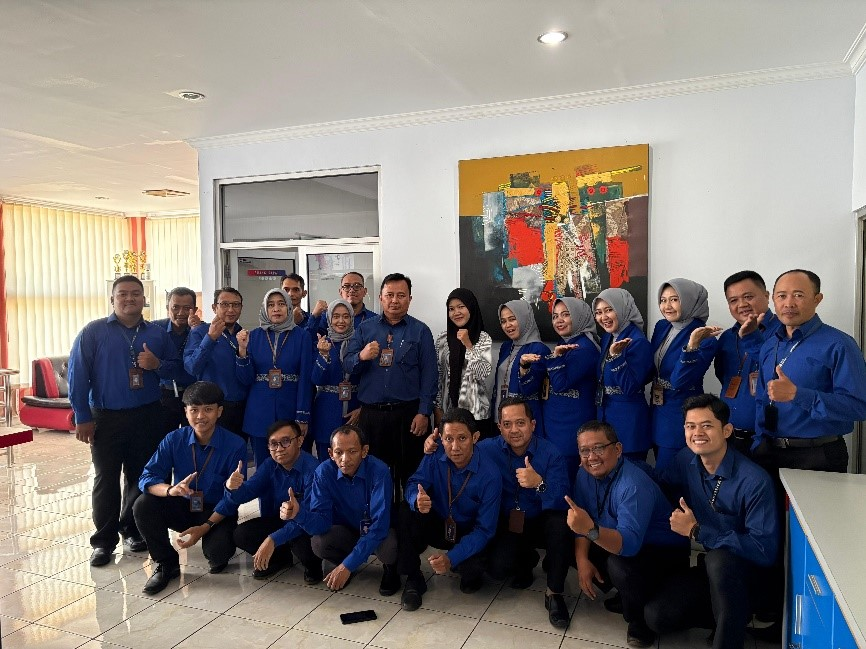
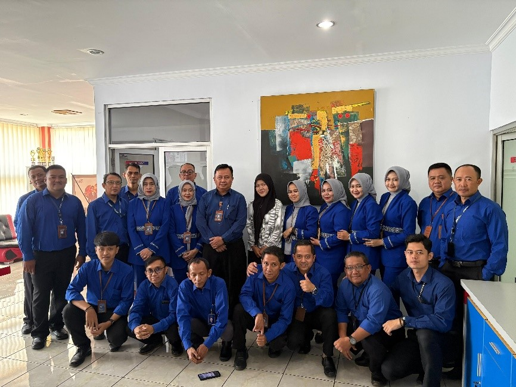

SEP — OCT
2025
2025
WORK EXPERIENCE
View GITHUB ↗
Web Developer
Perumda BPR Majalengka
Perumda BPR Majalengka adalah Badan Usaha Milik Daerah (BUMD) Kabupaten Majalengka yang bergerak di bidang perbankan rakyat. Bank ini dikenal dengan brand Bank Majalengka.
What I Worked On
- Menganalisis kebutuhan sistem pelaporan berbasis web.
- Merancang struktur database yang digunakan dalam sistem.
- Mengembangkan fitur-fitur pada aplikasi berbasis web.
- Melakukan pengujian untuk memastikan sistem berjalan dengan baik.
- Melakukan debugging dan perbaikan ketika ditemukan masalah.
- Berkolaborasi dengan pembimbing dan tim selama proses pengembangan.






01